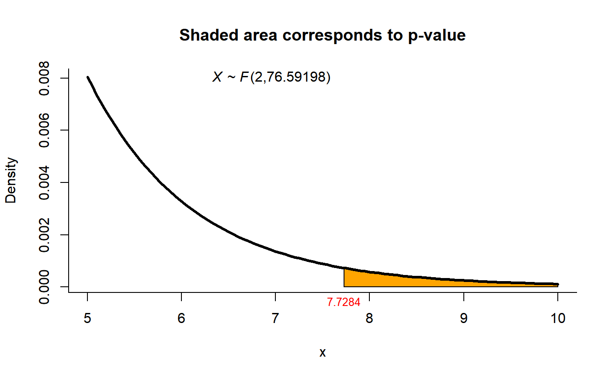

mvn_test.RdThis function implements the Modified Nel and Van der Merwe test the Behrens-Fisher problem \(H0: \mu 1 = \mu 2\) versus \(H1: \mu1\) not = \(\mu2\) without assuming anything about the covariance matrices.
mvn_test(xbar1, Sigma1, n1, xbar2, Sigma2, n2)
| xbar1 | a vector with the sample mean from population 1. |
|---|---|
| Sigma1 | a matrix with sample variances and covariances from population 1. |
| n1 | sample size 1. |
| xbar2 | a vector with the sample mean from population 2. |
| Sigma2 | a matrix with sample variances and covariances from population 2. |
| n2 | sample size 2. |
A list with class "htest" containing the following components:
the value of the statistic.
the degrees of freedom for the test.
the p-value for the test.
the estimated mean vectors.
a character string indicating the type of test performed.
# Example 4.1 from Nel and Van de Merwe (1986) page 3729 # Test H0: mu1 = mu2 versus H1: mu1 != mu2 n1 <- 45 xb1 <- c(204.4, 556.6) s1 <- matrix(c(13825.3, 23823.4, 23823.4, 73107.4), ncol=2) n2 <- 55 xb2 <- c(130.0, 355.0) s2 <- matrix(c(8632.0, 19616.7, 19616.7, 55964.5), ncol=2) res1 <- mvn_test(xbar1=xb1, Sigma1=s1, n1=n1, xbar2=xb2, Sigma2=s2, n2=n2) res1#> #> Modified Nel and Van der Merwe test for two mean vectors #> #> data: this test uses summarized data #> T2 = 15.6585, F = 7.7284, df1 = 2.000, df2 = 76.592, p-value = #> 0.0008763 #> alternative hypothesis: mu1 is not equal to mu2 #> #> sample estimates: #> Sample 1 Sample 2 #> xbar_1 204.4 130 #> xbar_2 556.6 355 #># NOT RUN { # Example using simulated data ----- # Parameters for the simulation n1 <- n2 <- 500 mu1 <- c(0, 0) sigma1 <- matrix(c(1, 0.5, 0.5, 1), ncol=2) mu2 <- c(0, 0) sigma2 <- matrix(c(1, -0.5, -0.5, 1), ncol=2) # Simulating the data library(MASS) dt1 <- mvrnorm(n1, mu=mu1, Sigma=sigma1) dt2 <- mvrnorm(n2, mu=mu2, Sigma=sigma2) Compositional::james(dt1, dt2, R=2) mvn_test(xbar1=colMeans(dt1), Sigma1=var(dt1), n1=nrow(dt1), xbar2=colMeans(dt2), Sigma2=var(dt2), n2=nrow(dt2)) # }